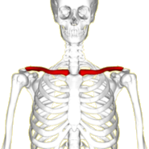

C
A, B, CAM, CAT, CAU, CE, CH, CI, CL, CON, COR, CR, CU, D, E, F, G, H, I, L, M, N, O, P, Q, R, S, T, U, V, X, Y, Z
cabalìstico (o cabbalìstico) agg. [der. di cabala] (pl. m. -ci). – Relativo alla cabala, nel sign. proprio ed estens.: dottrine c.; opere c.; arte c.; numeri c.; per estens., strano, misterioso, incomprensibile: segni c.; scrittura cabalistica.
cache-col = s.m. fr. Fazzoletto da collo da portarsi con la camicia aperta ETIM voce fr. propr. "nascondi-collo", comp. cacher, "nascondere" e col "collo". a. 1989
cacicco (o cacico) s. m. [dallo spagn. cacique, adattam. di una voce aruaca] (pl. -chi). – Titolo dato ai capi indigeni delle Antille, e quindi dell’America Centrale in genere e del Perù.
cadetto1 s. m. [dal fr. cadet, che è dal guascone capdet «capo, capitano», der. del lat. caput]. – 1. a. In origine, il secondogenito (e in seguito ogni ultrogenito) delle famiglie nobili guasconi, che prestava servizio militare come ufficiale (e poiché i cadetti si distinguevano per il loro spirito d’avventura e l’atteggiamento spavaldo, il nome di cadetto, come quello di guascone, divenne sinonimo di arditezza e insieme di millanteria; così li ricorda E. Rostand nel Cyrano de Bergerac: Questi sono i c. di Guascogna ... tutti soperchieria, tutti menzogna ...). b. In alcuni eserciti (Germania, Austria, Russia), prima della guerra 1914-18, grado militare corrispondente ad aspirante ufficiale. c. Nell’uso odierno, sinon., meno usato, di allievo, di un’accademia militare, navale o aeronautica. d. In alcuni rami dell’antica marina italiana, e ancora oggi in talune marine straniere, denominazione degli allievi aspiranti ufficiali di coperta. 2. Figlio maschio (talvolta, per estens., anche la femmina) non primogenito delle famiglie nobili in cui vigeva il maggiorasco; figlio o fratello minore in genere: aveva destinati al chiostro tutti i c. dell’uno e dell’altro sesso, per lasciare intatta la sostanza al primogenito (Manzoni); in senso assoluto, l’ultimo di tutti i fratelli. Come agg.: figlio c., fratello c., e in partic. ramo c., il ramo di una famiglia disceso da un cadetto. 3. Nello sport, al plur., cadetti, appellativo collettivo spec. dei calciatori che fanno parte delle squadre che partecipano al campionato nazionale di serie B: campionato cadetti. Sono chiamati così anche i componenti della squadra nazionale B di calcio.
caddie = s. ingl. [dallo scozzese, che a sua volta risale al fr. cadet: v. cadetto1] (pl. caddies ‹kä′di∫›), usato in ital. al masch. Nel gioco del golf, il ragazzo che ha il cómpito di portare i bastoni del giocatore in un’apposita custodia (di cuoio, di tela con rinforzi di cuoio, o di altro materiale) e di seguire con lo sguardo la traiettoria della palla per vedere dove cade.
cafóne s. m. (f. -a) [etimo incerto]. – Termine con cui nell’Italia merid. sono indicati i contadini, anche senza intenzione spregiativa: nella piazzetta s’è intanto ammassata una gran folla, nella quale riesce difficile distinguere, a prima vista, i c. dai piccoli proprietari (Silone). Più comunem. è usato, in tutta Italia, come titolo ingiurioso per significare persona rozza, grossolana, maleducata. ◆ Dim. cafoncèllo; pegg. cafonàccio.
cagliare1 v. intr. [lat. coagŭlare: v. coagulare] (io càglio, ecc.; aus. essere). – Rapprendersi, coagularsi per effetto del caglio. Talora usato transitivamente, con valore causativo: poi col presame cagliò la metà di quel candido latte (Pascoli). ◆ Part. pass. cagliato, anche come agg.: latte cagliato.
cagliare2 v. intr. [dallo spagn. callar «tacere, dissimulare»] (io càglio, ecc.; aus. avere), ant. – Perdersi d’animo, aver paura: se io ti disfido a giocare e tu ricusi, sei convinto e confessi di c. (Galilei); chetarsi, tacere: Farò ben io che stupefatta e muta Questa linguaccia tua cagli e trasecoli (S. Rosa).
calce1 s. m. [dal lat. calx calcis «tallone»]. – 1. ant. a. Estremità della lancia sotto l’impugnatura: l’asta si ruppe a due braccia dal c. (D’Azeglio). b. Calcio del fucile. 2. Locuz. avv. in calce, in fondo, a piè di pagina: fare una nota in c. al foglio; porre l’indirizzo in c. alla domanda.
caldeggiare v. tr. [der. di caldo] (io caldéggio, ecc.). – Sostenere con calore, favorire: c. una proposta, un’iniziativa, una candidatura.
camarilla s. f. [dallo spagn. camarilla ‹kamarìl’a›, dim. di cámara «camera», propr. l’antisala della camera reale, e per estens. i favoriti del re (soprattutto di Ferdinando VII di Spagna)]. – Gruppo di persone che, senza meriti e senza riconoscimento ufficiale, occultamente influenzano l’azione di un governo, di solito in senso reazionario e per interessi personali; estens., consorteria, cricca.
camera caritatis 〈iṅ kàmera ...〉 locuz. lat. [propr. «nella camera della carità» cioè «dell’amore», dove camera ha prob. il senso di «luogo dove si esercita il potere» e la caritas si contrappone al rigore della legge]. – Espressione usata spesso a proposito di rimproveri, ammonizioni, avvertimenti dati in segreto, amichevolmente e senza che altri lo sappia, o anche, per estens., a proposito di giudizî, notizie e sim. che si pronunciano o si comunicano confidenzialmente, col desiderio espresso che non siano resi noti ad altri: te lo dico così, in camera caritatis.
campagna s. f. [lat. tardo campanea, campania, propr. agg. neutro pl., der. di campus «campo»]. – 1. a. Estesa superficie di un terreno aperto, fuori del centro urbano; il termine è correntemente riferito a territorî di pianura o di bassa collina, corrispondenti in genere all’antico contado, occupati da colture o anche da pascoli o boscaglia, con case sparse: c. coltivata, incolta, verde, brulla; la C. Romana; la città e la c.; aria di c.; essere in aperta c.; fare una passeggiata in c.; abitare in c.; gente di c. (contrapp. agli abitanti dei centri urbani); andare, recarsi, essere in c., anche, in partic., come luogo di villeggiatura. Locuzioni: darsi, buttarsi alla c., darsi alla latitanza o al brigantaggio; battere la c., fare delle scorrerie (in questo sign. anche scorrere la c.), oppure perlustrare una zona, andare in ricognizione; in senso fig., divagare, uscire dall’argomento. b. Terra coltivata: quest’anno la c. promette bene; i frutti della c.; anche proprietà terriera: avere molta c.; la c. gli rende poco. 2. a. Luogo aperto, che si presta al rapido movimento di truppe e di mezzi guerreschi: Re Carlo era attendato alla c. (Ariosto); artiglieria da campagna. Di qui l’uso della parola come sinon. di guerra (fare una c.; entrare in c., incominciare la guerra; finire la c., ecc.), o per indicare il periodo di tempo in cui è possibile compiere operazioni militari attive. Oggi il termine indica un ciclo di operazioni che dal punto di vista strategico si presenta con una certa compiutezza d’insieme, indipendentemente dalla sua durata: la c. di Russia, di Napoleone; le c. d’Africa; fig., scherz., ha fatto le sue c., di chi (uomo o donna) ha condotto una vita libera e ha avuto parecchie avventure amorose. b. estens. Lunga navigazione compiuta per ragioni di studio (spedizioni oceanografiche, idrografiche, ecc.), di esercitazioni (viaggi d’istruzione), di divertimento (viaggi di piacere). c. fig. Insieme di azioni volte a un determinato fine, economico, igienico, politico, scientifico: c. pubblicitaria e c. di vendita; c. giornalistica; c. antimalarica; c. elettorale; c. di scavi; c. vaccinale. Nel gioco del calcio, c. acquisti, complesso delle trattative condotte dalle varie società per assicurarsi nuovi giocatori. 3. Periodo di tempo nell’anno (detto anche stagione) durante il quale ha luogo il raccolto di un prodotto agricolo o si provvede all’apcùria s. f. [dal lat. curia, di etimo incerto]. – 1. La più antica ripartizione politica e religiosa del popolo romano, attribuita a Romolo, il quale avrebbe diviso i cittadini in tre tribù (Tizî, Ramni e Lùceri) e ciascuna di queste tribù in dieci curie, le quali funzionavano come ufficio dello stato civile e di leva, riunendosi in assemblea nei comizî curiati. 2. Negli ultimi secoli dell’impero romano, nome del consiglio municipale (prima chiamato ordo decurionum). 3. Edificio, generalmente a pianta rettangolare, in cui si riunivano le curie create da Romolo; anche, la sede del senato e di altre corporazioni; per estens., il nome indicò talora il senato stesso. 4. Sinon. letter. ant. di corte. 5. Nome di alcune magistrature medievali; in partic.: a. Magistratura speciale lucchese (detta anche corte del fondaco), costituitasi all’inizio del sec. 14° e durata fino al 15°, avente il compito di vigilare sui prezzi, i salarî, i pesi, le misure, e inoltre di sorvegliare i lavori di manutenzione stradale. b. C. del mare (lat. Curia maris), magistratura speciale della corporazione della gente di mare, che nelle città marinare dell’Italia medievale aveva il compito di definire le controversie nascenti dal traffico, di verificare il carico, esercitare la polizia portuaria, riscuotere i dazî, ecc. 6. a. C. romana: il complesso di tutti i dicasteri (Segreteria di Stato, Congregazioni, Consigli, Tribunali e Uffici) di cui il pontefice si vale in via ordinaria per trattare gli affari che riguardano la Chiesa cattolica. b. C. diocesana (o vescovile): organismo costituito da un complesso di persone che hanno il compito di aiutare il vescovo nel disbrigo delle mansioni amministrative della diocesi; è divisa in due sezioni, una per gli affari amministrativi, una per quelli giudiziarî. c. C. generalizia: in taluni ordini religiosi, l’organo collegiale che coadiuva nelle sue mansioni il superiore generale. 7. Gli avvocati e i procuratori di un luogo, considerati nel loro complesso. provvigionamento di materie prime per determinate industrie o alla loro lavorazione: c. olearia, granaria, delle bietole, conserviera, ecc. 4. Analogam., nella tecnica, c. dei forni, il periodo di funzionamento dall’accensione allo spegnimento. 5. In araldica, pezza onorevole che occupa il terzo inferiore dello scudo. ◆ Dim. campagnétta, non com., terreno coltivato di piccole dimensioni.
campanilismo s. m. [der. di campanile]. – Attaccamento esagerato e gretto alle tradizioni e agli usi della propria città.
canèa s. f. [der. di cane]. – Muta di cani che inseguono le selvaggina abbaiando, e il loro stesso abbaiare; canizza. In senso fig., moltitudine schiamazzante, e lo schiamazzo stesso, soprattutto se violento e rabbioso: la c. delle donne urlanti; la c. dei critici e dei giornalisti e dei professori (Carducci).
cangiante agg. [part. pres. di cangiare]. – Riferito a colore, che cambia sfumatura a seconda della diversa incidenza della luce: un colore c.; un tessuto c., una seta c.; effetto cangiante. Con accezione più generica: come vi sono dei colori c., così non dubito, che dal miscuglio di molti odori non ne nasca un odor c. (Beccaria). Anche come s. m., per indicare un tessuto iridescente.
cangiare v. tr. e intr. [dal fr. changer, che è il lat. tardo cambiare] (io càngio, ecc.), letter. – 1. tr. Cambiare, mutare: Ma quell’anime, ch’eran lasse e nude, Cangiar colore e dibattero i denti (Dante); misero me! Chi ha cangiata mia dolcezza in tòsco? (Ariosto); travagliosa Era mia vita, ed è, né cangia stile (Leopardi). 2. Come intr. (aus. avere ed essere) e intr. pron., mutare, subire un cambiamento, e anche mutarsi, trasformarsi: Così dentro e di for mi vo cangiando (Petrarca); a vantaggio dell’umanità che sempre cangia e sempre vive (I. Nievo). ◆ Part. pres. cangiante, anche come agg. (v. la voce).
canizie /canìzie/ s. f. [dal lat. canities, der. di canus «grigio, canuto»]. – 1. Incanutimento, imbiancamento dei capelli e dei peli in genere, che si osserva comunemente nell’età avanzata ma che può presentarsi talora anche in soggetti giovani (c. precoce, spesso ereditaria e familiare). 2. Capigliatura bianca, capelli canuti: con le mani alzate sopra una c. vituperosa (Manzoni); estens., spec. in quanto segno dell’età senile, della vecchiezza: rispettare la c.; fu di conforto alla sua c.; due potestà, due c., due esperienze consumate si trovavano a fronte (Manzoni).
capèstro s. m. [lat. capĭstrum «cavezza»]. – 1. Fune grossa usata per legare per la testa buoi, vacche, cavalli, ecc.; cavezza: mettere il c., tirare il c.; rompere il c., anche fig., liberarsi da ogni soggezione; porre il c. a qualcuno, sottometterlo alla propria volontà. 2. La corda usata per impiccare, e per estens. la forca stessa: condannare, mandare al capestro. 3. fig. Come agg. invar., che impone condizioni molto dure: legge, contratto capestro. 4. ant. Il cordiglio dei francescani: quel capestro Che solea fare i suoi cinti più macri (Dante).
capillare agg. e s. m. [dal lat. capillaris «dei capelli, per i capelli», der. di capillus «capello»]. – 1. a. agg. e s. m. Simile a capello, sottile come un capello: tubi c., di sottilissimo diametro (di qui, fenomeni c.: v. capillarità); vasi c., o assol. capillari sost., in anatomia umana, canali o vasi di calibro ridottissimo; c. biliferi, i canalicoli biliari; c. linfatici, i vasi che formano le reti linfatiche iniziali; nell’uso, col termine capillari s’intendono più spesso i c. sanguiferi, sottilissimi vasi costituenti una fitta rete intercalata tra le terminazioni delle arteriole e le radici delle venule, e attraverso le cui pareti si operano gli scambî di ossigeno e anidride carbonica e di materiali nutritizî e di rifiuto tra il sangue circolante e i tessuti. Per analogia, come sost., nome con cui si designano, in varî corpi, i canalicoli attraverso i quali possono scorrere liquidi o sfuggire sostanze gassose, per es. i c. di Tammann, sottilissime fenditure talvolta invisibili anche al microscopio, sulla superficie apparentemente compatta di alcuni metalli, dovute a fenomeni di contrazione durante la solidificazione. b. agg. Nel linguaggio erboristico, specie capillari, piccole felci, come capelvenere, erba rugginina e adianto nero, così chiamate per la sottigliezza dei piccioli. 2. agg. fig. Di attività o azione che tende a penetrare in ogni ambiente o livello sociale, a raggiungere ogni singolo individuo che è o si presume interessato ad essa: propaganda c., di un prodotto industriale, di un’idea politica o simili; organizzazione c. di un partito politico; organizzazione c. di vendita; analisi c., indagine c., sottile, minuta, a proposito di un evento, di un’opera (artistica, letteraria, ecc.). 3. agg. In chimica, analisi c., analisi che sfrutta la diversa velocità di migrazione di liquidi o di sostanze in soluzione attraverso i capillari delle fibre costituenti la carta da filtro, sistema sfruttato in passato per la risoluzione analitica di miscugli di diverse sostanze (analisi di inchiostri, colori, ecc.), oggi applicato in forma di analisi cromatografica o semplicem. di cromatografia su carta. ◆ Avv. capillarménte, sottilmente, minutamente: analizzare capillarmente un testo; con azione capillare: attività commerciali di vendita organizzate capillarmente.
capitolare² [dal lat. mediev. capitulare, der. di capitŭlum "capitolo di una convenzione"] (io capìtolo, ecc.). - ■ v. intr. (aus. avere) 1. (ant.) [addivenire a un capitolato, stipulare un accordo] ≈ accordarsi, patteggiare, pattuire, venire a patti. 2. a. (milit.) [accettare le condizioni imposte dal nemico, trattare la resa: c. per mancanza di munizioni] ≈ arrendersi, cedere, darsi per vinto, gettare le armi. ↑ assoggettarsi, soccombere, soggiacere. ↔ resistere. ↑ contrastare, fare fronte, opporsi, respingere, tenere testa. b. (fig.) [cessare di opporre resistenza: capitolò di fronte alle sue insistenze] ≈ darsi per vinto, desistere, gettare la spugna, (fam.) mollare, rassegnarsi, rinunciare. ↔ insistere, perseverare, persistere, resistere. ■ v. tr., ant. [separare in capitoli] ≈ ⇑ dividere, (lett.) partire, sezionare, suddividere.
capitolato s. m. [der. di capitolo]. – 1. Atto amministrativo (propr. detto c. d’oneri) che contiene le condizioni e le modalità relative all’esecuzione di un contratto fra l’amministrazione pubblica e un privato o all’esercizio di una concessione fatta dalla prima al secondo: c. generali, se relativi a determinati tipi di contratto o di concessione; c. speciali, se relativi a determinati contratti o concessioni; c. d’appalto di lavori pubblici, c. d’affitto, ecc. Una scrittura analoga può formare anche il complemento di un contratto d’appalto fra privati, spec. fra un committente e una ditta di costruzioni: in essa si precisano diritti e doveri delle due parti, particolarità dell’esecuzione delle singole opere, materiali da impiegare, prezzi, compensi per le varie categorie di lavoro, ecc. 2. C. colonico: norme generali che regolano in una provincia, o anche in una zona che può comprendere più province o parte di una sola provincia, i contratti di mezzadria o di colonia, e alle quali i rapporti individuali si debbono attenere.
capzioso agg. [dal lat. captiosus, der. di capĕre «prendere»]. – Che tende a trarre in inganno, fallace, insidioso: ragionamento, argomento capzioso. ◆ Avv. capziosaménte, in modo capzioso: dibattito impostato capziosamente; una polemica capziosamente condotta.
caràcal = s. m. [dal turco karakulak «orecchio nero», attrav. lo spagn.]. Specie di felidi del genere lince (Lynx caracal), diffusi in tutta l’Africa e nell’Asia sud-occidentale: non raggiungono il metro di lunghezza, hanno pelame di colore fulvo, nero soltanto su due strisce dal naso agli orecchi, che sono molto lunghi e terminanti in punta con un ciuffetto di peli; sono ottimi corridori.

càrdias (o càrdia) s. m. (ant. càrdia s. f.) [dal lat. mediev. cardia, gr. καρδία, femm., con il sign. sia di «cuore» sia di «stomaco» e di «cardias»; sono apparentemente arbitrarî sia la -s finale, non etimologica (presente anche nello spagn. cardias), sia il mutamento di genere]. In anatomia, l’orifizio di sbocco dell’esofago nello stomaco.
carlinga s. f. [dal fr. carlingue, dapprima termine marin., di origine scandinava, che indicava una parte dell’armatura della nave o anche una parte dello scafo]. – La parte anteriore dello scafo, o fusoliera, dell’aeroplano, destinata a contenere l’equipaggio e parte delle installazioni.
caròta s. f. [lat. tardo carōta, dal gr. καρωτόν]. – 1. Erba annua o bienne delle ombrellifere (Daucus carota), alta fino a 2 m, con ombrelle a molti raggi, fiori per lo più bianchi, comune in Italia nei coltivati e negli erbosi in parecchie varietà; la carota comune (ssp. sativus) è coltivata per la radice ingrossata (detta anch’essa carota), di colore per lo più giallo arancio, dolce, commestibile (carote in umido, in insalata; contorno di carote). Dai semi si ottiene l’olio di c., impiegato per la fabbricazione di liquori stimolanti, nella preparazione di sostanze aromatiche e, limitatamente, in profumeria. In diverse regioni d’Italia col nome di carota s’intende invece la barbabietola da ortaggio, mentre la carota è chiamata pastinaca o altrimenti. Il bastone e la c., espressione che simboleggia proverbialmente due opposti ma concorrenti metodi di persuasione, la durezza e l’allettamento; è soprattutto nota per essere stata usata in un suo discorso del 1943 da W. Churchill, quando affermò che, per spingere l’Italia alla resa, si doveva continuare ad agire sull’asino italiano da ambedue le parti, con una carota e con un bastone («We shall continue to operate on the Italian donkey at both ends, with a carrot and with a stick»). 2. fig., pop. Fandonia, frottola: vendere o piantare carote, dare a intendere ciò che non è. 3. Nella tecnica mineraria e nella geologia applicata, campione di roccia di forma cilindrica e dimensioni varie, che si estrae dal sottosuolo con l’operazione di carotaggio. 4. Come agg. invar., di colore rosso arancio: un bambino dai capelli c., o color carota. Pel di carota, titolo d’un noto romanzo di J. Renard (1894), che ha per protagonista un ragazzo dai capelli rossi. ◆ Dim. carotina.
càrsico agg. [der. di carso] (pl. m. -ci) . Del Carso (nome comune a diverse regioni delle Alpi orient., caratterizzate dal fenomeno del carsismo), inerente al carsismo: altopiano c.; fenomeni c.; paesaggio carsico.
carso s. m. [etimo incerto; cfr. serbocr. krš «roccia, sasseto»]. Regione calcarea brulla di media montagna, di collina o di altopiano, interessata da fenoneni di carsismo. Come nome proprio, indica, per antonomasia, la regione montuosa delle Alpi orient., che comprende la regione istriana e quella ad essa retrostante fino alla linea Gorizia-Lubiana-Fiume.
cassare v. tr. [dal lat. tardo cassare «annullare», der. di cassus «vuoto, vano»]. – 1. Levare, cancellare uno scritto, un disegno in modo che non ne resti più traccia: ho dovuto c. il nome di Marco dalla lista degli invitati. 2. Abrogare, revocare, togliere autorità o effetto, annullare, riferito a leggi, decreti, sentenze, disposizioni ufficiali; con questi sign. è ormai raro, tranne che nell’accezione di annullare una sentenza (cfr. cassazione1). 3. a. Togliere, radiare dal ruolo una persona. b. ant. Licenziare, destituire. c. C. un debito, estinguerlo, o annullarne il documento. ◆ Part. pass. cassato; ant. casso (v. casso2).
cata- [dal gr. κατά «giù, in basso, sotto, per, contro, ecc.»]. – Primo elemento di parole composte, derivate dal greco o formate modernamente, col sign. di «giù, in basso, contro» o con altri sign. proprî del gr. κατά, κατα-.
catabòlico agg. [tratto da catabolismo; cfr. lat. catabolĭcus «che abbatte», der. del gr. καταβάλλω «gettar giù»] (pl. m. -ci). – Relativo al catabolismo: reazioni c., le reazioni che avvengono spontaneamente, con liberazione di energia, la quale in parte si trasforma in calore (e non è quindi più utilizzabile dalle cellule), e in parte viene immagazzinata in particolari composti (per es., l’adenosintrifosfato o ATP) che contengono legami ricchi di energia.
catacómba s. f. [lat. tardo catacumbae, prob. adattam. della locuz. gr. κατά κύμβας «presso le grotte», usata a Roma fin dal 4° sec. per indicare una località della via Appia nella quale sorge oggi la basilica di S. Sebastiano]. – Complesso di gallerie sotterranee, spesso a piani sovrapposti, con pareti scavate da ambo i lati da nicchie e loculi, usate dagli antichi cristiani in un primo tempo solo come cimiteri, in seguito anche come luogo di culto e convegno, e probabilmente solo a partire dalla persecuzione di Valeriano (257) come rifugio: le c. di san Callisto, di sant’Agnese, di Priscilla, di Domitilla, ecc., a Roma. Per estens., luogo freddo, umido e oscuro: questa camera è una c.; come fate a vivere in questa catacomba?
catafalco s. m. [forse lat. *catafalĭcum, comp. del gr. κατά «giù, in basso» e del lat. fala «torre di legno»] (pl. -chi). – 1. Nelle cerimonie funebri, impalcatura che serve di sostegno alla bara, in genere costituita da un doppio cavalletto rivestito di drappi; anticam., soprattutto in epoca barocca, per funerali solenni, ebbe l’aspetto di costruzione architettonica vera e propria, progettata talora da noti artisti. 2. fig., scherz. Struttura, o insieme di oggetti ammassati, che colpisce per la sproporzionata voluminosità: su quella parete ci va un mobile leggero, non quel c. lì!; comunicando il tremore delle sue membra agitate al c. di fiocchi, di fiori e di spennacchi che le trionfava sul capo (Fucini). 3. Palco innalzato per gli spettacoli.
catarsi s. f. [dal gr. κάϑαρσις «purificazione», der. di καϑαίρω «purificare»]. – 1. Nella religione greca, nella filosofia pitagorica e in quella platonica, indicava sia il rito magico della purificazione, inteso a mondare il corpo contaminato, sia la liberazione dell’anima dall’irrazionale. In partic., secondo Aristotele, la purificazione dalle passioni, indotta negli spettatori dalla tragedia. 2. Nella storia dell’estetica, l’azione liberatrice della poesia che purifica dalle passioni; nell’estetica di B. Croce, il momento supremo dell’intuizione poetica. Con valore più ampio, nel linguaggio letter., il termine è anche usato col senso generico di purificazione, liberazione dalle passioni. 3. In psicanalisi, processo di totale o parziale liberazione da gravi e persistenti conflitti o da uno stato di ansia, ottenuto attraverso la completa rievocazione degli eventi responsabili, che vengono rivissuti, a livello cosciente, sia sul piano razionale sia su quello emotivo.
catàrtico agg. [dal lat. tardo cathartĭcus, gr. καϑαρτικός «atto a purificare», der. di κάϑαρσις «catarsi»] (pl. m. -ci). – 1. Relativo alla catarsi, sia in senso più strettamente religioso (riti c.), sia nel sign. letter. ed estetico (letture, meditazioni c.; la funzione c. della poesia). 2. Nell’uso ant., ma ancor vivo nel linguaggio medico e farmaceutico, che ha effetto purgativo: medicamenti, farmaci, rimedî c., o ad azione c.; più propr. nella medicina antica erano detti catartici (anche come s. m.) i purganti con intensità d’azione intermedia tra quella dei lassativi (più blandi) e dei drastici (più energici): i medicamenti c. o purganti gagliardi sono nocivi (Redi). ◆ Avv. catarticaménte, con effetto catartico, purificatorio: letture che agiscono catarticamente sullo spirito.
càtodo s. m. [dal gr. κάϑοδος «discesa», comp. di κατά «giù» e ὁδός «via»; come anodo, il termine è stato introdotto in inglese (cathode) dal fisico M. Faraday (1834)]. – In elettrochimica, elettrodo che, in una cella elettrolitica o in un tubo a scarica, ha potenziale negativo rispetto all’anodo. In senso più generico, emettitore di elettroni, e in partic. emettitore elettronico per effetto fotoelettronico di superficie (c. fotoelettrico: v. fotocatodo) o per effetto termoelettronico (c. termoelettronico).
càule s. m. [dal lat. caulis «stelo, fusto»; cfr. cavolo]. – In botanica, organo delle piante, detto comunem. fusto: è la parte che porta le foglie, stabilendo un collegamento tra esse e la radice; può essere erbaceo o legnoso ed è diverso da specie a specie per forma (cilindrico, prismatico, schiacciato, ingrossato a palla), per lunghezza (da 1 cm a più di 100 m in alberi come la sequoia e l’eucalipto, e addirittura a più di 300 m in alcune palme delle foreste tropicali), per durata di vita (fino a migliaia di anni, nella sequoia). ◆ Dim. caulicino (v.).
cauṡale agg. e s. f. [dal lat. tardo causalis]. – 1. agg. a. Di causa, che è causa di qualcosa: rapporto c.; principio c.; collegamento c.; nesso c.; atto causale. b. In grammatica, proposizioni c., proposizioni subordinate che indicano la causa per cui avviene ciò che è detto nella proposizione reggente; possono essere esplicite, con il verbo di modo indicativo introdotto da una delle congiunzioni perché, poiché, ché, siccome, giacché, ecc. (dette appunto congiunzioni causali) o da locuzioni come per il fatto che, per il motivo che e sim. (per es.: «Mi tolgo la giacca perché fa caldo»; «Poiché non intesi la domanda, preferii tacere»), o implicite, con il verbo nel participio passato, nel gerundio, o nell’infinito introdotto dalle prep. per, di, a (per es.: «Riconosciuto colpevole, fu condannato»; «Sapendomi in casa, mi telefonò»; «Spesso, per voler troppo, non s’ottiene nulla»; «Sono lieto di vederti guarito»; «Hai fatto male a ritirarti»). c. Nel diritto comm., negozî c., i negozî nei quali (a differenza dei negozî astratti) è evidente la causa e quindi il titolo giustificativo degli effetti prodotti. 2. s. f. Causa determinante, movente (di un delitto, di un reato); motivo (di un pagamento, di un versamento). ◆ Avv. cauṡalménte, in modo causale, avendo riguardo alle cause.
cauteriżżare v. tr. [dal lat. tardo cauterizare]. – Trattare con il cauterio, sottoporre a cauterizzazione; per estens., causticare.
cauteriżżazióne s. f. [der. di cauterizzare]. – Applicazione chirurgica del cauterio per distruggere verruche, condilomi, piccoli tumori superficiali, ecc., oppure per sezionare tessuti non delicati (legamenti) o piccoli organi da asportare (appendice) in modo assolutamente sterile e senza sanguinamento.
cèntina s. f. [der. di centinare]. – 1. a. Struttura provvisoria di legname o di tubi d’acciaio (raram. di altri materiali) che serve per sostenere gli archi e le volte durante la costruzione (anche centinatura); ha gli elementi superiori foggiati in modo da seguire la curva d’intradosso della costruenda arcata, e su di essi si appoggiano trasversalmente gli assoni formanti un manto continuo (tamburo della c.). Il termine è esteso talora a indicare travature arcuate, metalliche, a carattere non provvisorio, che sostengono pensiline o tettoie. b. Nelle miniere, elemento resistente di armatura, di forma totalmente, o parzialmente, curvilinea. c. Nelle costruzioni aeronautiche, elemento della struttura interna di un’ala nel senso della sua profondità. Meno com., l’elemento della struttura interna trasversale delle fusoliere a guscio (più propr. detta ordinata). 2. Curvatura che il falegname o il fabbro dà a un’asse, a un ferro, alla parte superiore di un mobile, di un telaio, ecc. Di qui le locuz. a centina, arcuato, incurvato: spalliera, cornice a c.; far c., essere arcuato, ricurvo: un’asse che fa c.; dare un po’ di c., incurvare leggermente. 3. Punto a centina: punto di ricamo di rifinitura, consistente in una serie di festoncini arrotondati o di smerli. ◆ Accr. centinóne m. (v.).
Cèrere Nome (lat. Ceres -ĕris) della dea dei campi, assunto talora nella lingua poetica e letteraria per indicare antonomasticamente le biade, il pane: con l’acqua e con C. a le mense Gli aurati vasi e i nitidi canestri ... eran comparsi (Caro).
cerretano s. m. (f. -a) [dal nome di Cerreto di Spoleto, da dove nel medioevo vennero i primi venditori ambulanti]. – Ciarlatano, sia nel sign. generico sia in quello peggiorativo: un certo cerretano, De’ quali ogni dì molti ci si vede, Promise al padre suo renderlo sano (Machiavelli); Oggi l’alloro è premio di colui ... Che sale c. alla ribalta (Gozzano).
certosa (fr. chartreuse, da (grande) chartreuse, nome di un massiccio nella regione di grenoble dove nel 1084 venne fondato il primo monastero certosino.) 1. nome comune di tutti i monasteri certosini: la certosa di Pavia 2. nome commerciale di un formaggio simile al certosino 3. (non com.) luogo in cui regnano l’ordine e il silenzio.
cèlia s. f. [etimo incerto]. – Burla, scherzo, per lo più come contrapposto a «cosa seria»: Fate celia si dice a quelli che corbellano (Goldoni); queste son c., sono scherzi, cose dette così per dire; per c., per scherzo: dire, fare per c. (tosc., con questo senso, anche far celia: non credere che faccia c.; fai c. o dici sul serio?); fare all’amore per c., senza serie intenzioni; fuor di c., parlando o facendo sul serio; mettere in c. qualcuno, canzonarlo, prenderlo leggermente in giro; reggere la (o alla) c., stare allo scherzo, non aversene a male; con altro senso, reggere la c., aiutare altri a fare uno scherzo. ◆ Pegg. celiàccia.
cenotàfio = s. m. [dal lat. tardo cenotaphium, gr. κενοτάϕιον, comp. di κενός «vuoto» e ταϕός «tomba»]. Tomba vuota e, più comunem., monumento sepolcrale, innalzato in onore di qualche illustre defunto, senza che il suo cadavere vi sia effettivamente sepolto: il c. di Dante nella chiesa di S. Croce in Firenze.
cenozoico = era geologica alluale, na avuto inzio 65 milioni di anni fa ed è caratterizzata da una flora dominata dalle angiosperme e una fauna dominata dai mammiferi. Durante questa era si sono formate le catene montuose più recenti come le Alpi e l'Himalaya. È suddivisa in due periodi: Terziario e P Quaternario.
censóre s. m. [dal lat. censor -oris, der. di censere: v. censire]. – 1. Nella Roma antica, nome dei due magistrati incaricati di compiere il censimento (e in seguito addetti anche al controllo della condotta morale e civile dei cittadini, all’amministrazione dei beni dello stato, alla costruzione di opere pubbliche). 2. Nell’età medievale e moderna, funzionario preposto all’abbondanza; magistrato incaricato di vigilare sulle elezioni, sulla sicurezza pubblica, sulla legittimità di determinati provvedimenti, sulla necessità di certe spese, ecc. 3. Chi, per incarico dello Stato o della Chiesa, ha l’ufficio di rivedere scritti, componimenti drammatici, pellicole cinematografiche, per giudicare se possa esserne permessa la pubblicazione o rappresentazione. 4. Colui che, in alcune accademie, aveva o ha ancora l’incarico di esaminare gli scritti che devono essere letti o pubblicati negli Atti accademici. 5. Nei convitti, il superiore che più direttamente sorveglia la disciplina dei convittori; in partic., nei convitti annessi agli istituti d’istruzione tecnica e a quelli a indirizzo agrario, c. di disciplina, qualifica del personale di vigilanza. 6. Nel linguaggio com., per lo più iron. o spreg. (spec. nelle locuz. fare il c., erigersi a c.), persona che critica e biasima i costumi, le azioni, le opere altrui, spesso più per malignità che a fin di bene: era poi un rigido c. degli uomini che non si regolavan come lui (Manzoni). Con questo sign., si ha anche il femm. censora.
crinale1 agg. [dal lat. crinalis, der. di crinis «crine»], letter. – Dei capelli, usato per ornamento dei capelli: bende c.; ago c., grosso spillo da infilare nei capelli; in questo sign. anche come s. m.: toglie di fra le trecce un lungo c. d’oro (D’Annunzio).
céppo s. m. = [lat. cĭppus «palo di palizzata, cippo»; cfr. cippo]. – 1. a. Parte inferiore, piede, delle piante legnose, da cui si alza il tronco e da dove si diramano le radici e spesso nascono molti polloni; è detto anche ceppone, ciocca, ciocco. b. Grosso pezzo di tronco, reciso e pareggiato, che serve per sedervisi o per compiervi sopra qualche lavoro (spezzare la carne, sostenere l’incudine, ecc.); in partic., il toppo su cui si mozzava il capo ai condannati a morte. c. Pezzo di tronco d’albero o grosso ramo che si brucia sul focolare o nel caminetto, ciocco: Gira su’ c. accesi Lo spiedo scoppiettando (Carducci); mettere un c. sul fuoco; ardere un ceppo. d. Per antonomasia, il ciocco, per lo più di quercia, che arde nel focolare la notte di Natale (ovvero, secondo i luoghi, da Natale all’Epifania); in Toscana, attraverso questa accezione, il vocabolo è entrato in una fraseologia particolare relativa al periodo natalizio: festa del c., Pasqua di c., o assol. C. (o c.), la festività del Natale e più propriam. la notte della vigilia; fare il c., festeggiare il Natale; fare buon c., passare bene le feste natalizie; prov., chi fa il C. al sole, fa la Pasqua al fuoco, se c’è il sole per Natale, è probabile che per Pasqua piova; anche il periodo delle feste: essere vicini a c.; le vacanze di c.; trascorrere il c. in famiglia. Personificato, il Babbo Natale che la sera della vigilia, secondo la tradizione, porta doni ai bambini: state buoni, figliuoli, che stasera viene il C.; che t’ha portato il C.?; altrove si fa percuotere dai bambini il ciocco stesso sul focolare (battere il c.), e si fanno piovere di nascosto i regali. Quindi anche, in genere, regalo, strenna di Natale: da due anni si scordava di dargli il C. (Fucini). 2. Usi fig.: a. Persona stolida, balorda (per metafora tratta dalla durezza e immobilità del ceppo) o, più spesso, uomo tardo, lento a muoversi: figurarsi s’io voglio star qui un’ora a giocare a bazzica con questo c. (Goldoni); e in varie locuz.: parere un c., star lì come un c., stare immobile, o mostrarsi inesorabile; restar lì come un c., sbalordito; avere la testa come un c., dura; oggi ho la testa che mi pare un c., intontita. b. Capostipite di una famiglia; origine, principio di una stirpe (per l’uso araldico di raffigurare l’evoluzione di una stirpe con l’albero genealogico): Ruggier, che fu di voi E de’ vostri avi illustri il c. vecchio (Ariosto); essere d’antico c., di c. regale; uscire dal medesimo c.; la madre mia, Che dal c. di Priamo è discesa (Caro). Anche stirpe, lignaggio: i più de’ patrizi ... non furono di c. italico, discendendo dai barbari della Germania (Gioberti); era egli di c. paesano (I. Nievo). c. In antropologia fisica, la categoria sistematica in cui è incluso un complesso di forme razziali abbastanza simili per poterle ritenere derivate da antenati comuni, e presentanti un modello morfologico omogeneo nettamente differenziato da quello degli altri ceppi. Così, per es., il ceppo negride appartiene al ramo negroide, e comprende le razze sudanese, nilotica, cafra, ecc. d. In biologia, popolazione di organismi da laboratorio (drosofila, topi, granoturco, muffe, ecc.) della stessa specie, provenienti da progenitori comuni, tutti portatori di uno o più caratteri ereditarî particolari (detti marcatori), che si utilizzano per la sperimentazione; c. batterico, quello selezionato per una certa mutazione. e. Altre metafore, tratte dal sign. fondamentale della parola: su questo c. della Sicilia venivano a innestarsi i saraceni, i normanni (Abba); la società ... domestica ... unisce a un sol c. tutti gli sparti rami della generazione (Tommaseo). Anche nucleo, gruppo in genere: ceppi di case sparse tra i castagni (Pirandello). 3. Grosso pezzo di legno (e per estens. anche blocco d’altra materia), che costituisce parte di un congegno: c. dell’aratro, parte che gli serve di base; c. della campana, l’armatura che la tiene sospesa, più comunem. detta mozzo; c. della pialla, il blocco di legno nel quale è imbiettato il ferro della pialla; c. della croce, base di legno o d’altro in cui la croce è confitta; c. del freno, organo di vario materiale (ghisa, lamiera, legno, ecc.) che, nei freni ad attrito, esercita lo sforzo frenante contro la ruota; c. dell’àncora, grossa e pesante traversa, di legno o di ferro, posta sul fuso dell’ancora vicino alla cicala, perpendicolarmente al piano delle marre, la quale, quando l’ancora cade sul fondo, si adagia orizzontalmente, e permette a una delle marre di penetrare nel fondo facendovi buona presa. 4. ant. C. dell’orecchio, denominazione pop. della regione mastoidea. 5. Al plur.: a. Grossi arnesi di legno dentro cui si serravano i piedi dei prigionieri: mettendogli i piedi la notte ne’ c. (M. Villani). b. estens. Catene: di ceppi carche Avea le man (Alfieri). c. fig. Prigionia, schiavitù, asservimento: uscire dai c., esser liberato dai c., uscire dalla prigionia, da una schiavitù; rompere i c., liberarsi da una tirannia. 6. Roccia sedimentaria, conglomerato costituito da ciottoli tenuti insieme da cemento arenaceo, formatosi nel quaternario antico lungo il corso dei fiumi nell’alta pianura lombarda; è detto c. rustico se a grossi elementi, c. mezzano o gentile se a elementi medî o minuti, e viene adoperato come materiale edilizio da rivestimento. 7. ant. Cassetta con una fessura come nel salvadanaio, usata per raccogliere le elemosine e in alcuni luoghi per introdurvi il denaro delle multe o delle gabelle. ◆ Dim. cepperèllo (v.), ceppatèllo (v.); accr. ceppóne (in botanica, lo stesso che ceppo); pegg. ceppàccio.
ceruleo /cerùleo/ agg. e s. m. [dal lat. caeruleus; v. cerulo], letter. – 1. agg. Del colore del cielo sereno, azzurro chiaro: occhi c.; Ivrea la bella che le rosse torri Specchia sognando a la c. Dora (Carducci); la luna, in un canto, pallida e senza raggio, pure spiccava nel campo immenso d’un bigio c. (Manzoni); riferito a persona, che ha gli occhi azzurri: assaporavan l’agonia De’ cerulei Germani (Carducci); morbo c., vizio cardiaco congenito, detto anche morbo blu o azzurro (v. blu, n. 2). Come s. m., il c., il colore ceruleo. 2. s. m. Pigmento azzurro chiaro (anche detto celina) che si prepara per calcinazione ad alta temperatura di un miscuglio di ossido di stagno, di ossido di cobalto, di solfato di calcio e di silice.
cèspite s. m. [dal lat. caespes -pĭtis]. – 1. letter. Cespo: Come rugiada al cespite Dell’erba inaridita (Manzoni). 2. fig. Nella terminologia giuridica, finanziaria e commerciale, fonte, sorgente (di reddito, di entrata, di guadagno): c. ereditario.
chaperon‹šaprõ′› s. m., fr. [uso fig. di chaperon «cappuccio», dim. di chape «cappa»]. – 1. Donna, per lo più anziana, che un tempo accompagnava una giovane nubile di buona famiglia ai ricevimenti, nei viaggi e sim., per salvaguardarne la rispettabilità. 2. estens. Chi introduce qualcuno in un ambiente nuovo, spec. mondano: fare da chaperon.
chianti = sm. inv. Vino rosso, asciutto, di buona gradazione, prodotto nella zona del Chianti in Tosacna - ETIM dal nome della zona di produzione nella Toscana centrale - sec XVII.
chimismo s. m. [dal fr. chimisme, der. di chimie «chimica»]. – L’insieme dei caratteri chimici di una sostanza composta, oppure la serie dei fenomeni determinati da azioni chimiche: ch. gastrico, la composizione chimica del succo gastrico, e anche l’insieme dei fenomeni chimici della digestione che avvengono nello stomaco. In petrografia, ch. delle rocce, l’insieme dei caratteri chimici che riescono peculiari ai varî tipi litoidi, in diretta dipendenza dalla loro costituzione mineralogica.
chiòccia s. f. [der. di chiocciare] (pl. -ce). – La femmina dei gallinacei domestici nel periodo in cui cova le uova o quando ha i pulcini; mettere la ch., mettere la gallina a covare le uova; fig., fare la ch., riferito a persona, accoccolarsi, e, con altro sign., essere molto (o troppo) protettivo. ◆ Dim. chioccétta; anche nome con cui sono talora chiamate per similitudine le Pleiadi: La Chioccetta per l’aia azzurra Va col suo pigolìo di stelle (Pascoli).
chiostrina s. f. [dim. di chiostra]. – Piccolo cortile interno degli edifici di abitazione, destinato ad arieggiare e illuminare scale e ambienti di servizio; è detto anche cavedio (v.).
chirografàrio agg. [dal lat. tardo chirographarius: v. chirografo]. – Che si riferisce a un chirografo: creditore ch., quello che vanta un credito in base a un documento firmato dal debitore.
chitarra s. f. [dal gr. κιϑάρα; cfr. cetra]. – 1. Strumento musicale a corde, costituito da una cassa a fondo piatto a forma di 8, e da un manico ai cui cavicchi s’attaccano più corde (di solito 6), che il suonatore mette in vibrazione con le dita della mano destra o, talvolta, col plettro; è usata il più delle volte per accompagnamento, ma è anche strumento da solisti. Ch. elettrica, chitarra – di largo impiego nel jazz e nella musica leggera – nella quale le vibrazioni delle corde sono convertite in impulsi elettrici, che, passando attraverso un amplificatore, giungono a uno o più altoparlanti. Ch. hawaiana: v. hawaiano. Ch. basso, altro nome del contrabbasso elettrico. 2. Arnese formato da fili metallici tesi su di un telaio, adoperato in Abruzzo per ricavare da una falda di pasta i cosiddetti spaghetti alla chitarra. 3. Pesce chitarra (o pesce violino), pesce cartilagineo commestibile della famiglia rinobatidi, che vive in profondità nel Mediterraneo. ◆ Dim. chitarrétta, chitarrina, chitarrino m.; spreg. chitarrùccia; accr. chitarróna, e chitarróne m. (v.); pegg. chitarràccia.
cingalese /cingalése/ agg. e s. m. e f. – Variante, meno corretta, di singalese, abitante di Ceylon o relativo a Ceylon.
cimitero /tʃimi'tɛro/ (ant. e poet. cimiterio, ant. cemeter[i]o) s. m. [dal lat. tardo coemeterium, gr. κοιμητήριον "dormitorio, cimitero"]. - 1. [luogo destinato alla sepoltura dei morti] ≈ (archeol.) necropoli, (archeol.) sepolcreto. 2. (fig.) [luogo silenzioso, abbandonato] ≈ deserto, mortorio.
ciofèca (o ciufèca) s. f. [di etimo incerto, forse dallo spagn. chufa «mandorla per fare un’orzata»], roman. – Bevanda di sapore cattivo: altro che caffè lungo, questa è una ciofeca.
cipiglio /cipìglio/ s. m. [forse da *sorcipiglio, *sorpiciglio, lat. supercilium «sopracciglio; superbia»]. – Increspamento della fronte e corrugamento delle ciglia, in segno di superbia o di sdegno o di corruccio o di minaccia; più com. col senso di aspetto severo, corrucciato: non le era però cessato il terrore del c. del padre (Manzoni); guardare con c.; far c. (o il c.), atteggiare il viso a severità o sdegno.
circoscrizióne (ant. circonscrizióne) s. f. [dal lat. circumscriptio -onis, propr. «il segno tracciato intorno»]. – 1. Il circoscrivere o l’essere circoscritto. 2. concr. Spazio, territorio compreso entro limiti stabiliti, e più particolarm. l’ambito territoriale dentro il quale opera e per il quale ha competenza un determinato organo (amministrativo, giurisdizionale, ecc.): c. politica, c. giudiziaria, ecc. In partic.: c. aerea o di aeroporto, spazio aereo controllato dagli enti che regolano il traffico aereo e nel quale i voli debbono essere condotti secondo determinate procedure di sicurezza; c. amministrativa, divisione del territorio dello stato in parti più o meno vaste, al cui ambito è circoscritta la competenza degli uffici locali (in Italia le circoscrizioni amministrative fondamentali sono la provincia, il comune e la regione); c. comunale, ciascuna delle zone, comprendenti uno o più quartieri o territorî contigui, in cui possono essere ripartiti i comuni al fine di realizzare un ampio decentramento amministrativo e di favorire insieme una maggiore partecipazione all’amministrazione del comune, con proprî uffici per l’organizzazione e l’espletamento dei varî servizî (a Roma le circoscrizioni sono dette municipî, a Venezia e a Napoli municipalità); nell’uso com., anche l’insieme di questi uffici, e l’edificio in cui hanno sede (andare alla, o anche in, circoscrizione); c. ecclesiastica, nella Chiesa cattolica, ogni ripartizione territoriale (le diocesi, e, nelle terre di missione, i vicariati e le prefetture apostoliche) su cui esercita poteri giurisdizionali e di governo l’autorità ecclesiastica di grado inferiore al papa; c. elettorale, ciascuna delle ventisei zone in cui è suddiviso il territorio nazionale per l’attribuzione con criterio proporzionale dei seggi alla Camera dei deputati.
circospezióne (ant. circonspezióne e circunspezióne) s. f. [dal lat. circumspectio -onis, der. di circumspicĕre «guardarsi intorno»]. – Cautela, prudenza mista a timore e, talvolta, a sospetto: procedere, operare, parlare con c.; questi asterischi vengon tutti dalla circospezione del mio anonimo (Manzoni).
cirro = s. m. [dal lat. cirrus «ricciolo, frangia, viticcio»; col sign. 2, il termine è stato introdotto nella terminologia scient. dal meteorologo ingl. L. Howard nel 1803]. 1. letter. Ricciolo, ciocca di capelli inanellati: Quinzio [Cincinnato], che dal cirro Negletto fu nomato (Dante); i c. delle capellature ribelli (D’Annunzio). 2. Tipo di nube bianca di alta quota (superiore a 6000 m alle medie latitudini), di struttura fibrosa, trasparente, di forma irregolare, per lo più arricciata e ritorta, costituita di sottili aghi di ghiaccio; precede spesso il fronte d’una zona ciclonica e viene detta, dai marinai, coda di gatto. 3. In botanica, organo (detto anche comunem. viticcio) di attacco o di sostegno delle piante angiosperme rampicanti non volubili, derivato da metamorfosi del caule (come nella vite), delle foglie (nelle leguminose) o di radici (nella vaniglia). Cirro-ventosa, cirro che aderisce al sostegno mediante espansioni terminali (vite del Canada). 4. In zoologia, nome di formazioni di diversa natura: a. Organi di movimento grossi e appuntiti, costituiti da pennelli di ciglia agglutinate, localizzati sulla faccia ventrale dei ciliati ipotrichi e che si muovono come vere zampette. b. Corte appendici tentacolari inserite sui parapodî degli anellidi, che possono funzionare come organi tattili o essere trasformate in branchie arborescenti o assumere, come accade nelle specie natanti, la forma di membrane foliacee o, come in quelle reptanti, di scaglie dorsali. c. Trasformazioni pluriarticolate e munite di setole delle zampe toraciche dei cirripedi, i cui movimenti ritmici determinano la corrente d’acqua utile alla respirazione e al nutrimento. d. Organo copulatore di alcuni molluschi e trematodi (vermi piatti).
cistifèllea s. f. [comp. di cisti- e del lat. felleus, agg. di fel «fiele»]. – In anatomia, organo cavo (detto anche vescichetta biliare e colecisti) a forma di pera, situato sulla faccia inferiore del fegato, che accumula e concentra la bile proveniente dal dótto cistico.
citologìa s. f. [comp. di cito- e -logia]. – Disciplina biologica che studia la struttura e le funzioni delle cellule animali e vegetali come entità morfologiche e fisiologiche fondamentali degli organismi viventi, la loro formazione, il loro comportamento, i loro attributi, nonché la natura e la funzione dei singoli costituenti cellulari, tra cui particolare importanza assume il nucleo (oggetto di studio della citologia nucleare o cariologia). Lo studio delle cellule si avvale in genere dei metodi della tecnica microscopica, con varî accorgimenti di colorazione e di illuminazione.
clavicola /clavìcola/ s. f. [dal lat. clavicŭla, dim. di clavis «chiave»]. – In anatomia umana, osso lungo, pari, in forma di S allungata, che si articola trasversalmente tra la scapola e lo sterno, al di sopra della prima cartilagine costale.
clessidra (ant. clepsidra) s. f. [dal lat. clepsydra, gr. κλεψύδρα, comp. di κλέπτω «rubare» e ὕδωρ «acqua»]. – Orologio usato nell’antichità, formato essenzialmente da un vaso contenente acqua o sabbia, che può gradatamente vuotarsi dal fondo: la valutazione del tempo trascorso si ricava dall’abbassamento del livello nel vaso, oppure dalla quantità di liquido o sabbia affluita in un altro vaso collocato inferiormente. La clessidra è stata adoperata anche in seguito per misurare grossolanamente brevi intervalli di tempo (per es., a bordo delle navi, col nome di ampollina, per il computo della velocità della nave stessa, oppure per misurare le unità di una conversazione telefonica interurbana, il tempo della cottura di un uovo, ecc.) o per uso decorativo, e in questo caso ha assunto e conservato la forma caratteristica di due ampolle comunicanti fra loro per mezzo di un sottile orifizio attraverso cui fluisce la sabbia o l’acqua (capovolgendo poi lo strumento, si inverte la posizione dei due vasi o si protrae lo scorrimento del fluido e, quindi, l’intervallo di tempo misurato). Nell’iconografia, è simbolo dello scorrere del tempo e della caducità della vita terrena.
cloaca s. f. [dal lat. cloaca, che deriva dalla stessa radice del gr. κλύζω «lavare, pulire»]. – 1. Condotto sotterraneo che raccoglie e scarica le acque piovane e i liquidi di rifiuto; fogna, chiavica. In usi fig., per mettere in risalto la bruttura morale di un luogo: Quelli ch’usurpa in terra il luogo mio [è s. Pietro che parla di papa Bonifacio VIII] ... Fatt’ ha del cimitero mio cloaca Del sangue e de la puzza (Dante); o per indicare sporcizia materiale: quella città è una vera c.; talora anche riferito a persona abitualmente dedita a un pesante turpiloquio. Come denominazione storica, c. massima, cloaca costruita in Roma, secondo la tradizione, dagli Etruschi, in periodo regio, con scarico nel Tevere. 2. In anatomia comparata, parte terminale dell’intestino, in cui sboccano anche i condotti del sistema urinario e delle gonadi. Si trova, fra i vertebrati, nei selaci, anfibî, rettili, uccelli; nei mammiferi si forma nell’embrione, ma permane soltanto nei monotremi. Il termine indica anche analoghe formazioni di alcuni invertebrati (ascidie, maschi di alcuni nematodi, ecc.). 3. In medicina, c. ossea, foro attraverso il quale, nell’osteomielite, si elimina il liquido essudativo del focolaio flogistico.
coazióne s. f. [dal lat. coactio -onis, der. di cogĕre «costringere», part. pass. coactus]. – 1. Violenza morale o fisica fatta all’altrui volontà, in modo da togliere la libertà d’azione. 2. In psichiatria, fenomeno morboso caratterizzato dall’insorgenza di un pensiero o di un impulso ad agire, da cui il soggetto non riesce o fatica a liberarsi, pur giudicandoli futili o inconsistenti. In psicanalisi, c. a ripetere, la tendenza a ripristinare esperienze passate vissute dall’individuo come particolarmente gratificanti: si esprime nei fenomeni di regressione e di fissazione. 3. In meccanica, c. elastica, stato in cui può trovarsi un solido elastico nel quale, nonostante l’assenza di ogni sollecitazione esterna, si abbia una certa distribuzione interna di tensioni dovuta, per es., a vincoli, a connessioni forzate (come in un anello incompleto le cui estremità vengono avvicinate e poi saldate), a variazioni di temperatura, a fenomeni di presa e di indurimento, ecc.
cogènte agg. [dal lat. cogens -entis, part. pres. di cogĕre «costringere»]. – Che costringe, che obbliga, che ha una funzione coattiva: norme cogenti, nel linguaggio giur., quelle che non possono essere derogate dal privato (come le norme di diritto pubblico e, del diritto privato, quelle cosiddette di ordine pubblico). Per estens., di argomento, prova, affermazione che non ammette dubbî: un’argomentazione, una dimostrazione cogente.
cogitabóndo agg. [dal lat. tardo cogitabundus, der. di cogitare «pensare»], letter. – Pensieroso; si dice spec. di chi mostra d’avere qualche grave pensiero che lo preoccupa: stare, rimanere cogitabondo. Oggi si adopera per lo più in tono scherzoso.
coibènte agg. e s. m. [dal lat. cohĭbens -entis, part. pres. di cohibere «trattenere, impedire», comp. di co-1 e habere «avere»]. – Sinon. di isolante, riferito a materiale che non lascia passare l’elettricità e il calore, o anche il suono.
coibentare v. tr. [der. di coibente] (io coibènto, ecc.). – Rendere coibente. ◆ Part. pass. coibentato, anche come agg.: serbatoi coibentati; furgone coibentato per trasporto di merci deperibili; giacche coibentate, pareti coibentate.
colòno s. m. (f. -a) [dal lat. colonus «colono, fittaiolo; abitante d’una colonia»]. – 1. a. In senso proprio, coltivatore del fondo con cui si associa il concedente nel contratto di colonìa parziaria. b. In senso lato, mezzadro, o ogni singolo componente della famiglia colonica. 2. estens., letter. Contadino, lavoratore della terra: Al pio c. augurio Di più sereno dì (Manzoni). 3. Abitante, componente d’una colonia, spec. con riferimento a colonie antiche: i c. fenici fondatori di Cartagine.
comburènte agg. e s. m. [dal lat. comburens -entis, part. pres. di comburĕre «bruciare»]. – Nel linguaggio tecnico, di sostanza che, combinandosi con un’altra (combustibile), ne mantiene la combustione (normalmente l’ossigeno).
còmma (nei sign. 1 e 2, anche còma) s. m. [dal lat. comma -ătis; gr. κόμμα, propr. «pezzetto, frammento» (der. di κόπτω «tagliare»), poi con il sign. 1] (pl. -i). – 1. Nella retorica classica e medievale, parte del periodo individuata da pausa, senza che raggiunga la compiutezza di significato che è propria invece del colon. 2. Nell’interpunzione medievale, il segno ??, formato da un trattino sovrastante a un punto, che indicava una pausa corrispondente pressappoco a quella indicata dalla nostra virgola (in alcune lingue, come il ted. Komma, e l’ingl. comma, la parola è ancora in uso per indicare la virgola). 3. Ognuna delle suddivisioni di un articolo di legge, rappresentata tipograficamente da un accapo, in modo che il primo c. corrisponde al «principio», il secondo c. al primo «capoverso» e così via. 4. In musica, intervallo tra due suoni di altezza diversa, non praticato nella composizione musicale, calcolato a 1/9 o a 1/10 di tono.
commendàbile agg. [dal lat. commendabĭlis], letter. – Degno di essere commendato, cioè approvato, lodato o raccomandato: l’orazione è c. per li suoi molti buoni effetti (Cavalca).
commendévole agg. [der. di commendare], letter. – Commendabile, lodevole: è una prova c., se non in tutto in tutto plausibile (Carducci).
compito /kom'pito/ agg. [part. pass. di compire]. - [pieno di garbo] ≈ cortese, educato, garbato, gentile, signorile. ↔ maleducato, scortese, screanzato, sgarbato, villano.
compreṡènza s. f. [comp. di con- e presenza]. – L’esser presente con altri.
concertare v. tr. [dal lat. concertare «gareggiare», comp. di con- e certare «lottare, contendere»] (io concèrto, ecc.). 1. Stabilire, preparare un’azione, un’impresa o altro, di comune accordo fra più persone e per lo più in segreto: c. un programma d’azione; hanno concertato una truffa ai suoi danni; Renzo ... concertò con le donne, o piuttosto con Agnese, la grand’operazione della sera (Manzoni). Nell’intr. pron., accordarsi insieme per fare qualche cosa: si sono concertati di (o per) fargli uno scherzo. 2. In musica: a. Preparare un complesso di musicisti all’esecuzione d’un pezzo musicale: c. un preludio; il direttore stava concertando la sinfonia. b. Accordare fra loro gli strumenti per l’esecuzione d’un pezzo: c. i legni con gli ottoni, c. i violoncelli e i bassi con le viole, e sim. ◆ Part. pres.
concìlio s. m. [dal lat. concilium «convocazione, convegno», comp. di con- e tema di calare «convocare, chiamare»]. – 1. Adunanza della gerarchia di una comunità religiosa; nella Chiesa cattolica, c. ecumenico, adunanza di tutti i vescovi convocata dal papa e da lui diretta, per deliberare sui problemi dottrinarî e disciplinari della Chiesa (per es., il c. ecumenico Vaticano II, indetto da papa Giovanni XXIII nel 1959 e concluso, nel 1965, da Paolo VI); c. provinciale, convocato dal vescovo della metropoli, con la partecipazione di tutti i vescovi delle città minori della provincia, per deliberare su questioni amministrative e disciplinari. 2. Con senso più generico, e di solito scherz., adunanza, riunione di persone, spec. se fatta con grande apparato e con ostentazione di segretezza: oggi le portinaie della zona hanno tenuto c.; i ragazzi si sono riuniti in c. segreto: stanno certo combinando qualcosa. Per estens., Dante (Purg. XXI, 16) chiama beato c. l’insieme dei beati, il cielo; Caro (En. III, 1070) parla di c. orrendo dei Ciclopi, e T. Tasso (Ger. Lib. XIII, 4) chiama c. infame quello dei demonî e delle streghe. 3. Presso gli antichi Romani, il termine (lat. concilium) indicò assemblee e riunioni, di popoli stranieri, di confederazioni, della plebe, di tutto il popolo, ecc.
concióne s. f. [dal lat. contio -onis, da un anteriore co(n)ventio «riunione», der. di convenire «riunirsi»], letter. – 1. ant. Pubblica adunanza, assemblea per trattare di cose dello stato (con questo sign. il termine è usato solo in riferimenti storici): fu convocata una c.; chiamò il popolo a c. (Machiavelli). 2. Discorso solenne fatto in pubblico, arringa (nell’uso moderno ha spesso valore iron. o spreg.): non è con enfatiche c. che si provvede ai bisogni del popolo; il direttore ci ha tenuto un’interminabile concione. 3. Anticamente, il termine (lat. contio, o concio) fu usato per indicare la riunione del popolo romano, su convocazione di un magistrato o di un sacerdote, con lo scopo, spec. in età repubblicana, di ascoltare le dichiarazioni del magistrato convocante; passò poi a indicare la sede della propaganda elettorale e, nel medioevo, fu uno dei nomi coi quali veniva chiamato, nei comuni italiani, il parlamento.
concrezióne s. f. [dal lat. concretio -onis, der. di concrescĕre «coagularsi»]. – 1. In genere, ogni aggregamento di sostanze minerali. In partic., c. minerali, aggregati cristallini a struttura granulare o fibrosa, originatisi, per deposito di sostanze a intervalli successivi, da soluzioni acquose mineralizzate, con conseguente zonatura resa evidente dalla presenza di superfici di discontinuità talvolta accompagnate da colorazioni diverse. 2. In medicina, deposito di materiale organico o inorganico in una cavità naturale del corpo (calcoli) o nell’intimo di un tessuto (calcinosi, ecc.). 3. Accrescimento per aggiunta, per giustapposizione di altri elementi. In linguistica, sinon. di agglutinazione, limitatamente a casi particolari come la fusione dell’articolo (per es. il region. loppio, specie di acero, da l’oppio).
concupiscènte agg. [dal lat. concupiscens -entis, part. pres. di concupiscĕre «bramare»], letter. – Bramoso, che esprime concupiscenza: la guardava con occhio concupiscente.
concupiscènza s. f. [dal lat. tardo concupiscentia; v. concupiscente], letter. – Brama ardente, desiderio appassionato, soprattutto di piaceri fisici, corporali: peccati di c.; essere tormentato dalla c.; guardare con c.; i denti de la c. trafiggono con morsi soavi e dolci (Aretino). Più raram., avidità d’altri oggetti: c. di lodi, di ricchezze, di guadagni. Nella morale cristiana, passione intemperante, intesa come predominio della materia sullo spirito.
concussióne s. f. [dal lat. concussio -onis «scossa, eccitamento», che nel lat. tardo prese il sign. di «pressione indebita, estorsione», der. di concutĕre «scuotere»]. – 1. Reato del pubblico ufficiale che, abusando della sua qualità o delle sue funzioni, costringe (c. violenta) o induce (c. implicita o fraudolenta) taluno a dare o a promettere indebitamente a lui, o a un terzo, denaro o altra utilità, anche di natura non patrimoniale. 2. Con riferimento al sign. lat. del verbo concutĕre «sbattere, agitare insieme», sono definiti a concussione gli strumenti musicali idiofoni a percussione costituiti da elementi che battono uno contro l’altro; ne fanno parte, per es., le castagnette (o nacchere). 3. ant. Scossa violenta, agitazione.
condilòma s. m. [dal lat. condyloma, gr. κονδύλωμα, der. di κόνδυλος «prominenza»] (pl. -i). – In medicina, escrescenza cutanea o mucosa, dovuta a un esagerato sviluppo delle papille del derma: c. acuminato (detto anche vegetazione venerea, perché frequentemente trasmissibile per via sessuale, e volg. cresta di gallo), neoformazione benigna della cute e delle mucose, di aspetto filiforme o di piccola cresta, dovuta a un virus specifico, che si osserva di preferenza sui genitali o nella regione perianale; c. piano, denominazione delle papule sifilitiche ipertrofiche e vegetanti, che si osservano nel periodo secondario della sifilide, spec. in corrispondenza dei genitali e della regione perianale.
condilomatòṡi s. f. [der. di condiloma, col suffisso -osi]. – In medicina, affezione cutanea caratterizzata dalla contemporanea presenza di un gran numero di condilomi.
condiscendènte agg. [part. pres. di condiscendere]. – Facile a condiscendere, arrendevole: è una persona gentile e condiscendente; essere, mostrarsi c. con o verso qualcuno.
conguàglio s. m. [der. di conguagliare]. – 1. Operazione di pareggiamento. In partic., in contabilità e nel linguaggio economico-finanz., procedimento che tende a livellare situazioni sperequate o ad adeguare, in sede definitiva, un pagamento a un determinato criterio: finora ho riscosso soltanto degli anticipi, e alla fine dovrà essere fatto il conguaglio. Con accezioni specifiche: c. dei cambî, complesso di operazioni tendenti a equilibrare domanda e offerta di divise estere in modo da stabilizzarne il corso; c. dei dividendi, nelle società per azioni, quando, alla fine di un esercizio con reddito abbondante, le società non distribuiscono tutto l’utile, ma ne trattengono una quota da aggiungere al reddito più scarso previsto per gli esercizî successivi; c. tributario, nel caso in cui il contribuente che abbia pagato in misura provvisoria un’imposta su un reddito ancora non definitivamente accertato, ad accertamento avvenuto sia tenuto a versare un’aggiunta ovvero abbia diritto a una detrazione dall’imposta dovuta negli anni successivi. 2. Con sign. concr., la somma versata o corrisposta a conguaglio: hai riscosso il conguaglio?.
consecutio temporum ‹konsekùzzio tèmporum› locuz. lat. (propr. «correlazione dei tempi»), usata in ital. al femm. – Complesso delle norme che nel latino classico regolano la scelta del tempo del congiuntivo nella proposizione dipendente in base al tempo della proposizione reggente. Con senso più ampio, l’espressione è talora usata per indicare le norme che regolano in genere i rapporti temporali del verbo nell’interno del periodo sia latino sia dell’italiano e di altre lingue.
constatare (o costatare) v. tr. [dal fr. constater, der. del lat. constat, voce del verbo constare «esser noto»] (io constàto o cònstato, ecc.). – Accertare, appurare, stabilire con certezza, sulla base di prove e documenti: c. la verità di un fatto, l’esattezza di una teoria; i calcoli sono errati, come puoi c. tu stesso; c. che la squadra non sta dando i risultati sperati; c. di aver fatto un grosso errore di valutazione. Più genericam., acquisire cognizione certa di un fatto, di una realtà: non posso non rammaricarmi, nel c. come sperperi il denaro.
consulto s. m. [dal lat. consultum «deliberazione», der. di consulĕre «consultare»]. – Consultazione di due o più medici intorno a un ammalato, richiesta di solito dal medico curante, per approfondire i varî problemi clinici connessi alla malattia, discuterne la diagnosi e la condotta terapeutica: chiedere un c., chiamare a c.; riferito ai medici, essere, riunirsi a consulto. Per estens., in riferimento ad altri settori, indagine o esame affidata a più esperti.
conquìbus (o cumquìbus) s. m. [latinismo scherz., da cum quibus «con quali», sottint. nummis «denari» o sim.]. – Denaro, quattrini: i desiderî non bastano, ci vuole il c.; e dove lo troviamo il c.?; don Gesualdo ha il cuore più grande di questa chiesa! ... e i conquibus anche! (Verga).
consultivo agg. [der. del lat. consulĕre «consultare», part. pass. consultus]. – Che ha la facoltà di esprimere pareri ma non di deliberare: organo c.; assemblea consultiva. In partic., in diritto pubblico, parere c., parere che non deve essere necessariamente osservato dall’organo che lo ha richiesto (in contrapp. a >parere vincolante); voto c., voto che viene dato a semplice titolo di parere da coloro che partecipano a un’assemblea, senza diritto di concorrere a determinarne la volontà.
consunto agg. [part. pass. di consumere]. – Consumato, logoro: un vestito ormai c.; i gradini c. di una vecchia casa. Detto di persona o dell’aspetto fisico, emaciato, sfinito: viso c.; vedi com’è consunto!; pop., è morto c., tisico.
contézza s. f. [der. di conto1 «noto»]. – 1. letter. Notizia, cognizione particolareggiata di una cosa: avere, dare, prendere c. di un fatto; mi trassi oltre per aver contezza Di quello spirto (Dante). 2. ant. Conoscenza, familiarità: la giovane ... la c. della sua vecchia con lui aveva veduta (Boccaccio).
contingente /contingènte/ agg. e s. m. [dal lat. contingens -entis, part. pres. di contingĕre «toccare, ottenere, succedere», comp. di con- e tangĕre «toccare»]. – 1. agg., ant. a. Che tocca, tangente, contiguo. b. Spettante: la parte c. a voi; porzione che giustamente lor fu c. (Boccaccio). 2. s. m. a. Parte assegnata o imposta come contribuzione, quota di ripartizione, porzione che tocca a ciascuno, e sim.: ho già versato il mio c.; c. d’importazione, ammontare massimo fissato dallo stato all’importazione (assai raram. all’esportazione) di uno o più prodotti entro date unità di tempo. Anche in senso estens., una certa quantità del tutto: la fabbrica ha prodotto un primo c. di tubi. b. Nel linguaggio milit., in passato, c. di leva, il complesso dei giovani di una classe chiamati alla leva; c. alle armi, il totale degli uomini che si trovano sotto le armi in un dato momento; c. in congedo, l’insieme dei militari appartenenti alle classi in congedo. Più genericam.: un primo c. di truppe è già arrivato al fronte. 3. agg. In filosofia, accessorio, eventuale, accidentale (contrapp. a necessario); anche nell’uso com., di ciò che si verifica casualmente, in una particolare circostanza: per cause c., in situazioni contingenti. Come sost., il contingente, tutto ciò che è accidentale, che può non essere, opposto al necessario.
contraddire (o meno corretto contradire) v. tr. [lat. contradīcĕre, comp. di contra «contro» e dicĕre «dire»] (coniug. come dire; imperat. contraddici). – 1. a. Opporre alle affermazioni di una persona affermazioni diverse o contrarie, muovere obiezioni, negare quanto un altro asserisce: nessuno ha potuto contraddirlo; ha la brutta abitudine di c. sempre e chiunque; non è per contraddirti, ma questa volta ha ragione lui; meno com. l’uso intr., con il compl. di termine: c. alle parole di qualcuno; un agnello se nessun lo tocca, ma se uno vuol contraddirgli ... ih! (Manzoni). b. fig. Riferito a situazioni, avvenimenti, comportamenti, essere in contrasto, avere significato opposto o diverso, dimostrare falso o sbagliato, e sim.: i fatti contraddicevano le sue parole; il suo modo d’agire contraddice apertamente le sue dichiarazioni; la gravità della situazione reale contraddice le ottimistiche previsioni del governo. c. Nel rifl. contraddirsi, dire o fare cosa contraria a quella detta, o fatta, prima: non vedi che ti contraddici tu stesso?; con valore reciproco: i due testimoni si sono contraddetti, hanno fatto dichiarazioni fra loro contrastanti. 2. ant. Contrastare, opporsi a qualcuno, impedirgli di fare una cosa: quantunque quegli ... colle coltella in mano il contradicessero (Boccaccio). ◆ Part. pass. contraddétto, anche come agg.: ci sono dell’eccezioni alle regole più comuni e men contraddette? (Manzoni).
contrappasso1 (o contrapasso) s. m. [dal lat. mediev. contrapassum, comp. di contra «contro» e pati «soffrire», part. pass. passus]. – Corrispondenza della pena alla colpa, consistente nell’infliggere all’offensore la stessa lesione da lui provocata all’offeso, e più comunem. detta pena o legge del taglione (v. taglione1). Nella Divina Commedia, il rapporto per cui la pena alla quale sono sottoposti i peccatori nell’oltretomba riproduce – in estensione o in contrasto – i caratteri essenziali della colpa, o alcuni di essi: Perch’io parti’ così giunte persone, Partito porto il mio cerebro, lasso!, Dal suo principio ch’è in questo troncone. Così s’osserva in me lo contrapasso (Dante, Inf. XXVIII, 139-142).
contrappeso s. m. [comp. di contra- e peso2]. – 1. Massa che, attraverso un opportuno dispositivo, equilibra, in tutto o in parte, il peso di una massa mobile (come per es. nei montacarichi) o la mantiene in una posizione di riposo o ve la riporta dopo uno spostamento. Fare c., fare da c., bilanciare, pareggiare un altro peso; anche in senso fig.: la mia autorità fa (da) c. alla sua. 2. In radiotecnica, insieme di conduttori (a raggiera, a griglia, ecc.) tesi, parallelamente al suolo ma isolati da esso, al di sotto di un’antenna, allo scopo di costituire una sorta di terra artificiale.
contrassegno2 /contrasségno/ s. m. [comp. di contra- e segno]. – 1. a. Segno particolare col quale si distingue o si riconosce una persona o una cosa: cucire un c. sul vestito; portava per c. un fiore all’occhiello; c. elettorale, simbolo caratteristico, con o senza scritte, che, depositato nei termini fissati dalla legge presso i competenti uffici, contraddistingue a fini elettorali (ed è quindi riportato sulle schede di votazione) i singoli partiti o gruppi politici che si presentano alle elezioni con una propria lista; c. di legittimazione, documento che serve a identificare il soggetto che ha diritto a una prestazione; c. di assicurazione, tagliando, rilasciato dalla società assicuratrice come prova dell’avvenuto pagamento, che, secondo le norme sulla circolazione stradale, dev’essere esposto bene in vista sul parabrezza degli autoveicoli. Diritti per contrassegno, diritti riscossi dalle dogane in corrispettivo dell’apposizione di bolli di piombo e sim. destinati ad accertare l’identità delle merci spedite da una dogana all’altra. b. In araldica, contrassegni d’onore, lo stesso che distinzioni di dignità (v. dignità). 2. non com. Segno, indizio, prova: c. di stima, di affetto, d’amore; accetta questo libro come c. della mia amicizia.
contravvenire v. intr. [dal lat. giur. mediev. contravenire, propr. «andare contro (la legge)»] (coniug. come venire; aus. avere). – Operare contro, trasgredire: c. alle leggi, a una disposizione, ai regolamenti stradali, a un divieto, a un patto, alla volontà di qualcuno.
contravvenzione /contravvenzióne/ s. f. [dal lat. giur. mediev. contraventio -onis; v. contravvenire]. – In genere, atto (o omissione) con cui si contravviene a un precetto contenuto in una norma giuridica, e che in genere offende gli interessi amministrativi dello stato, per cui è dalla legge considerato reato punibile con l’arresto o l’ammenda (distinguendosi in ciò dal delitto, che comporta la multa o la reclusione): c. a una disposizione del regolamento comunale; cadere in c.; incorrere in una c.; dichiarare in c., contestare una contravvenzione. Nell’uso corrente il termine indica non tanto la trasgressione in sé quanto il fatto della contestazione, e l’oblazione stessa con cui in particolari casi (trasgressione di alcune norme di circolazione stradale, di regolamenti comunali sull’edilizia, ecc.) è possibile estinguere la contravvenzione: elevare c.; fare una c.; pagare la contravvenzione.
contrito agg. [dal lat. contritus, part. pass. di conterĕre «stritolare, logorare, consumare»; nel sign. fig., dal lat. eccles.]. – 1. ant. Stritolato, tritato. 2. Profondamente addolorato e pentito di una colpa o di un fallo commesso, soprattutto come sentimento religioso: essere, mostrarsi c.; contrita d’ogni suo peccato, divotamente si confessò (Boccaccio).
contrizióne s. f. [dal lat. tardo, eccles., contritio -onis, der. di contritus: v. contrito]. – Sentimento di vivo dolore e di sincero pentimento per colpe commesse, soprattutto in trasgressione alle leggi della morale cristiana: provare, sentire c., viva c.; fare atto di c., dichiarare il proprio pentimento; con accezione specifica, atto di c., o di dolore, la preghiera che esprime la propria contrizione, e che di norma si recita dopo la confessione dei peccati nel sacramento della penitenza. In teologia, la contrizione è considerata pentimento perfetto, e contrapposta all’attrizione che è invece pentimento imperfetto perché determinato da paura della pena.
controbattere /controbàttere/ v. tr. [comp. di contro- e battere, sul modello del fr. contre-battre]. – Rispondere con altri colpi ai colpi di un avversario; opporre il tiro della propria artiglieria al tiro nemico. In senso fig., replicare alle affermazioni o argomentazioni dell’avversario con argomentazioni proprie: c. un’accusa.
contumacia /contumàcia/ s. f. [dal lat. contumacia, der. di contŭmax: v. contumace] (pl., raro, -cie). – 1. Nel diritto processuale penale, situazione di un imputato che, essendo stato citato in giudizio, si astiene dal comparire al dibattimento; nel diritto processuale civile, situazione della parte che si astiene da ogni attività processuale in un processo da essa iniziato o contro di essa promosso. 2. Segregazione (detta anche quarantena) nella quale si tengono per un determinato periodo persone, merci o oggetti provenienti da zone infette e perciò sospetti di portare in sé l’infezione: essere, mettere, tenere in c.; nel momento di cui parliamo, il lazzeretto non serviva che per deposito delle mercanzie soggette a c. (Manzoni). In partic., il periodo di completo isolamento sanitario al quale sono obbligate le navi provenienti da luoghi infetti da malattie contagiose: c. di osservazione, durante la quale la nave può restare anche in un porto comune; c. di rigore, quando la nave deve sostare in un’apposita stazione sanitaria. 3. ant. a. Disobbedienza ostinata, ribellione: in c. della Chiesa, in condizione di scomunicato, fuori della comunione della Chiesa: quale in c. more Di Santa Chiesa, ancor ch’al fin si penta ... (Dante). b. Di corpi materiali, resistenza opposta a pressione o ad altro, scarsa malleabilità, tenacia.
contumace agg. e s. m. e f. [dal lat. contŭmax -acis «arrogante, ostinato, renitente a una citazione o sentenza»]. – 1. Imputato in un processo penale o parte in un processo civile che si trovino in situazione di contumacia: dichiarare contumace l’imputato. 2. agg., ant. a. Disobbediente agli ordini, protervo, indocile, che non si sottomette: ostinato e c. a Santa Chiesa (Machiavelli). b. Di cosa, resistente, tenace.
converso = s.m 1 Fratello laico che vice in convento sbrigando vari servizi 2 ant. Uomo convertito al monachesimo ETIM dal lat. mediev. eccl. convèrsum "convertito". part. pass di convèrtere "convertire" sec. XIV
Conventio ad excludendum loc. lat. con la quale s'intende definire un accordo esplicito o una tacita intesa tra alcune parti sociali, economiche o politiche, che abbia come fine l'esclusione di una determinata parte terza da certe forme di alleanza, partecipazione o collaborazione. Usata nel linguaggio politico italiano, fu coniata negli anni settanta dal giurista e politico Leopoldo Elia, con riferimento al rifiuto di molte forze politiche – sostanzialmente di quelle che avrebbero poi costituito il pentapartito (DC, PSI, PSDI, PLI e PRI) – di includere il partito comunista in una coalizione di governo. Queste forze temevano il legame tra il PCI e l'Unione Sovietica e i paesi satelliti, retti tutti su economie pianificate di stampo socialista.
convenuto agg. e s. m. [part. pass. di convenire]. – 1. a. agg. Fissato, stabilito di comune accordo: trovarsi al luogo c.; versare il prezzo convenuto. b. s. m. Con valore neutro, ciò che è stato stabilito in seguito ad accordi: stare al c.; tener fede al c.; secondo il convenuto. 2. s. m. (f. -a) a. Ciascuna delle persone radunate in un convegno: porgere il saluto ai convenuti. b. In diritto, soggetto contro il quale viene proposta una azione giudiziaria.
convenzióne s. f. [dal lat. conventio -onis «incontro, riunione; accordo, contratto», der. di convenire: v. convenire]. – 1. Accordo, patto stretto fra due o più persone, fra enti pubblici, fra stato e stato, mediante il quale ciascuna delle parti si obbliga a mantenere i reciproci impegni: preparare, fare, concludere, firmare una c.; mantenere, osservare una c.; per tacita c.; c. commerciale, doganale. In partic., in diritto internazionale: c. consolari, accordi con i quali due stati si impegnano a ricevere ciascuno i consoli dell’altro, regolandone in modo particolareggiato il procedimento di nomina, le funzioni e le rispettive residenze; c. internazionali, atti giuridici consistenti in accordi fra due o più soggetti di diritto internazionale, che pongono norme o dànno un regolamento d’insieme a grandi interessi collettivi (per es., la convenzione di Ginevra del 1949 per la protezione delle vittime di guerra); c. sanitarie, accordi internazionali che regolano la cooperazione fra gli stati per la difesa e la lotta contro le malattie contagiose o pandemiche (colera, peste, AIDS, ecc.) e contro le malattie sociali (tubercolosi, cancro, abuso di sostanze stupefacenti, ecc.). Con riferimento ad accordi in materia monetaria, monete di c., nei sec. 18° e 19°, quelle per le quali era stato stabilito un rapporto fisso da un’apposita convenzione internazionale. 2. a. Generale accordo circa la scelta tra possibilità diverse; in partic., nelle scienze, riguardo all’uso e al significato di determinati simboli, all’adozione di unità di misura, alle norme da seguire nell’uso o nella formazione della terminologia, ecc. b. Uso accettato e seguito dalla maggioranza, nei modi di vivere e di pensare, in forme e maniere d’arte, ecc.; consuetudine, tradizione (per lo più al plur.): persona attaccata alle c.; essere schiavo delle c. sociali; liberarsi delle convenzioni. 3. a. ant. Convegno, riunione: nelle c. e adunanze de’ popoli (Boccaccio). b. Assemblea politica, organo collegiale: Convenzione nazionale (o assol. la Convenzione), assemblea legislativa francese durata dal 21 sett. 1792 al 26 ott. 1795, che elaborò la costituzione della nuova repubblica francese. c. Nel sistema politico degli Stati Uniti d’America, il congresso nel quale i rappresentanti dei partiti procedono alla nomina dei proprî candidati alle varie cariche elettive.
convèsso = [agg. Der. del lat. convexus, da convehere "raccogliere insieme, condurre"] [LSF] Che si presenta ricurvo all'infuori come, per es., l'esterno di una sfera; è il contrario di concavo. ◆ Angolo c.: ogni angolo minore di un angolo piatto.
convòlgere (ant. convòlvere) v. tr. [dal lat. convolvĕre, comp. di con- e volvĕre «volgere»] (coniug. come volgere), letter. – Avvolgere in uno o più giri, avvoltolare: convòltolo per lo fango, tutti i panni in dosso gli stracciò (Boccaccio); anche nel rifl.: una sola onda enorme si convolse in un vortice (D’Annunzio). ◆ Part. pass. convòlto, anche come agg.: Quel s’attuffò, e tornò su convolto (Dante), rivolto sottosopra, con la schiena in su piegata ad arco.
còpra = s. f. [dal port. copra, voce di origine indostana]. Mandorla della noce di cocco essiccata, che si presenta in spicchi o pezzi coriacei e irregolari, da cui si estrae l’olio di cocco detto anche olio di copra.
copreṡènza s. f. [der. di presenza, col pref. co-1]. – Nella scuola, il fatto che in una stessa classe operino più insegnanti con funzioni disciplinari analoghe (per es., un assistente madrelingua nell’insegnamento di lingue straniere), o anche diverse ma orientate a un obiettivo o percorso didattico comune.
corazziere = s.m. Nei secc. XVI-XVII, soldato a cavallo armato di lancia e minito di corazza; oggi, carabiniere della guardia d'onore del Presidente dell Repubblica 2 fig. Uomo alto e robusto - ETIM deriv. di corazza con -iere, calco del francese cuirassier- sec. XVII
cornucòpia s. f. (raram. m.) [dal lat. tardo cornucopia, lat. class. cornu copiae]. – Nome classico del corno dell’abbondanza, simbolo della fertilità, raffigurato colmo di frutti e circondato d’erbe e di fiori. Nell’antichità classica era attributo di dei e dee ritenuti dispensatori dei beni della terra e, tra i Romani, delle divinità cui si attribuiva un significato di prosperità e di augurio, come, in partic., la dea Fortuna.
correggiato (o coreggiato) s. m. [der. di correggia1]. – Arnese per la battitura dei cereali e di altre piante da seme, formato da due bastoni, detti rispettivam. manfanile (quello più lungo che costituisce il manico) e vetta, uniti da una correggia di cuoio (gómbina).
corrèo (alla lat. còrreo) s. m. (f. -a, non com.) [dal lat. tardo corrĕus, comp. di con- e reus «reo»]. – Chi è imputato di un reato insieme con altri; chiamata di correo, accusa rivolta dall’imputato ad altra persona, indicata come partecipe del reato.
corroborare v. tr. [dal lat. corroborare, der. di robur -bŏris «rovere; forza»] (io corròboro, ecc.). – Fortificare, rinvigorire: vino, liquore che corrobora lo stomaco; c. il corpo con esercizî ginnastici; in senso astratto, rendere più saldo, temprare: gli studî corroborano l’ingegno; la meditazione corrobora lo spirito; fig., avvalorare, confermare: questi argomenti corroborano la mia tesi, o, con altra costruzione, c. una tesi con nuovi e più validi argomenti. Nell’intr. pron., fortificarsi, rinvigorirsi, in senso proprio e fig.: nella consuetudine del pericolo, si corrobora sia il fisico sia lo spirito. ◆ Part. pres. corroborante, anche come agg. e s. m. (v. la voce).
corruttèla s. f. [dal lat. corruptela, der. di corrumpĕre «corrompere», part. pass. corruptus]. – 1. letter. Alterazione, disfacimento: la c. del sangue; corrompimento, come alterazione di uno stato o di una condizione iniziale: la c. della lingua, del gusto estetico; in filologia, guasto subìto da un singolo luogo nella tradizione di un testo. 2. Depravazione, corruzione morale: la c. de’ costumi è mortale alle repubbliche (Leopardi).
còsa fatta capo ha. – Frase storica (propr. «una cosa fatta non può essere disfatta», cioè riesce al suo capo, al suo effetto) che, secondo le testimonianze di R. Malispini e di G. Villani, sarebbe stata pronunciata da Mosca dei Lamberti per indurre gli esitanti Amidei e consorti a vendicarsi di Buondelmonte, uccidendolo: vendetta che fu causa (Dante, Inf. XXVIII, 106-111) della divisione tra i cittadini di Firenze, e dalla quale avrebbe avuto origine la divisione tra Guelfi e Ghibellini. La frase è ancora usata per tagliar corto a eccessive titubanze o a inutili discussioni su cose ormai accadute.
cosacco s. m. e agg. [dal russo kozak, kazak, che è dal turco-tataro qazāq «vagabondo»] (pl. m. -chi). – 1. s. m. a. (f. -a) Nome con cui si designarono in origine gli abitanti nomadi, di stirpe tatara, delle steppe della Russia merid., lungo il corso inferiore e medio del Dnepr e del Don, ai quali dal sec. 15° si unirono i cosacchi russi, gruppi di uomini che nella steppa trovarono la libertà sottraendosi al giogo dello stato o dei latifondisti: organizzati in comunità militari o di mestiere, secondo principî di uguaglianza e di autonomia amministrativa, avevano un capo elettivo, detto ataman. Gli attuali cosacchi sono sparsi in varie zone della Federazione Russa. b. Soldato dell’esercito russo reclutato da tale popolazione. 2. agg. Dei cosacchi, che si riferisce ai cosacchi: le comunità c.; i costumi c.; danza cosacca.
cotóne s. m. [dall’arabo quṭun]. – 1. Nome di varie specie di piante del genere Gossypium, della famiglia malvacee, nonché dei peli che rivestono i semi, dai quali si ottiene una fibra tessile naturale largamente usata nel mondo. Le specie spontanee sono suffrutici o frutici, alti da 1 a 4 m, quelle coltivate sono annue: tutte hanno fusto ramoso, fiori solitarî con cinque petali bianchi, rosei o gialli, di solito con una vistosa macchia rossa alla base; il frutto è una capsula coriacea, ovata, contenente semi rivestiti di peli lunghi e fittissimi, di color bianco, rossastro o fulvo nelle specie coltivate, tutti rossastri in quelle selvatiche. Dai semi si estrae anche, per pressione, un olio commestibile di colore giallo pallido, inodoro e insipido, usato nell’alimentazione, nella fabbricazione di saponi, di olî idrogenati e olî ossidati. 2. Fibra tessile ricavata dai peli che rivestono i semi della pianta omonima, da cui si ottengono filati e tessuti. Tra i filati più noti e comuni: c. perla o perlato (fr. coton perlé), a due fili, a torsione stretta, usato per ricami; c. per imbastire, in rocchetti o gomitoli, poco torto, grezzo; c. brillante, reso lucido attraverso un bagno di soda caustica; c. ritorto, robusto, in rocchetti, formato dalla riunione di tre fili semplici ritorti in una sola volta; c. da rammendo, formato da parecchi fili poco torti e riuniti fra loro. 3. C. idrofilo: cotone cardato che ha subìto un trattamento chimico per l’asportazione delle sostanze grasse e resinose, allo scopo di conferirgli la capacità di assorbire acqua; è molto usato per medicazioni, e nella pratica cosmetica. Nel linguaggio com. è detto anche semplicem. cotone, soprattutto in locuz. fig.: avere il c. negli orecchi, di chi non ascolta, perché disattento, o perché non vuol sentire ciò che gli vien detto; tenere qualcuno nel c., trattarlo o allevarlo con eccessivi riguardi; stare nel c., vivere fra le delicatezze: non sono un signorino avvezzo a star nel c. (Manzoni). 4. C. fulminante, c. collodio, il fulmicotone.
cràpula s. f. [dal lat. crapŭla, e questo dal gr. κραιπάλη]. – Il mangiare e il bere smoderatamente e con disordine, come fatto singolo o abituale; gozzoviglia: abbandonarsi, darsi alla c.; essere dedito alla crapula.
crinale1 agg. [dal lat. crinalis, der. di crinis «crine»], letter. – Dei capelli, usato per ornamento dei capelli: bende c.; ago c., grosso spillo da infilare nei capelli; in questo sign. anche come s. m.: toglie di fra le trecce un lungo c. d’oro (D’Annunzio).
crinale2 (o clinale) s. m. [der. di crine, che in Toscana ha il medesimo sign.; cfr. anche crina]. – La zona più elevata di un rilievo montuoso o collinare quando si prolunga con linea continuata: corrisponde, per lo più, allo spartiacque.
crine s. m. (ant. crina s. f.; ant., ma tuttora in uso nel sign. 1, crino) [lat. crīnis «crine, capello, chioma»]. – 1. Ciascuno dei peli della criniera o della coda del cavallo e di animali affini, di struttura simile a quella del capello umano, costituiti essenzialmente da cheratina, usati per imbottiture, nella fabbricazione di spazzole e pennelli e nell’industria tessile: una spazzola di crini; cambiare i c. all’archetto (del violino); spesso usato, soprattutto con riferimento all’uso per imbottiture, al sing. con valore collettivo: materasso di crine; imbottitura di crine. 2. C. vegetale (o semplicem. crine), materiale fibroso proveniente da diverse piante, spec. palme, posto in commercio sotto forma di trecce ritorte, usato per imbottiture, imballaggi, materassi. C. vegetale marino, fornito dalle foglie seccate di due piante monocotiledoni, Zostera marina e Posidonia oceanica, usato per imbottiture e imballaggi. 3. Tessuto rigido di crine animale, vegetale o artificiale, usato come contrafforte in sartoria. 4. poet. Capello: Allor di quella bionda testa svelse Morte co la sua mano un aureo c. (Petrarca); con valore collettivo, i capelli, la chioma: Ornare ella si appresta Dimani, al dì di festa, il petto e il c. (Leopardi). 5. Chioma luminosa di comete; poet., raggio luminoso del Sole, delle stelle: In quella parte del giovanetto anno Che ’l sole i crin sotto l’Aquario tempra (Dante). 6. tosc. Crinale di un rilievo montuoso: percorrendo il c. di quel monte (Fucini).
crisantemo (pop. griṡantèmo) s. m. [dal lat. chrysanthĕmum, gr. κρυσάνϑεμον, comp. di χρυσός «oro» e ἄνϑεμον «fiore»; la pronuncia piana prob. per influenza del fr. chrysanthème]. – 1. Genere di piante delle composite tubuliflore comprendente circa 200 specie erbacee, annue o perenni, oppure suffrutici, con capolini solitarî o in corimbo; i fiori periferici sono bianchi o gialli, generalmente ligulati, quelli tubulosi del disco sono gialli. In Italia crescono spontanei nei campi il fior d’oro, il tanaceto, ecc., e molte altre specie a capolini gialli o rossi. 2. Nome delle varie piante appartenenti all’omonimo genere, con partic. riferimento alle numerose razze di origine colturale, poliibridi originati da varie specie, soprattutto da Chrysanthemum indicum e da Ch. morifolium, entrambi della Cina e del Giappone, da cui derivano rispettivamente forme a capolini piccoli e forme a capolini grandi.

creanza s. f. [dallo spagn. crianza «allevamento, creanza», der. di criar «allevare», lat. creare]. – L’insieme dei modi che, nei rapporti con gli altri, si convengono a persona bene educata: avere, non avere creanza; conoscere la c. o le c., le regole della c. o della buona c.;
crest nel linguaggio militare italiano è una riproduzione realizzata in ottone, bronzo o comunque metallo, dello stemma araldico di un reparto militare.
crisma s. m. [dal lat. tardo chrisma, gr. χρῖσμα «unguento, unzione», der. di χρίω «ungere»] (pl. -i). 1. Uno degli olî santi, consacrati dal vescovo ogni anno il giovedì santo: è costituito da una mescolanza di olio d’oliva e di balsamo e viene usato nell’amministrazione di alcuni sacramenti (battesimo, cresima), nella consacrazione dei vescovi, della chiesa, dell’altare, ecc. 2. In senso fig., per lo più scherz., approvazione, convalida da parte di un superiore, dell’autorità competente e sim.: il progetto ha ricevuto il c. del direttore; anche al plur.: è stato eletto con tutti i c., in piena regola, con tutti gli atti che servono a convalidare l’elezione.
crocìfero (raro crucìfero) agg. e s. m. [dal lat. tardo crucĭfer -fĕri, comp. di crux -ucis «croce» e -fer «-fero»]. – 1. agg. Che porta la croce: asta c., antenna c., asta che sostiene una croce, o termina nella parte superiore a forma di croce. 2. s. m. Portatore di croce; in partic., l’accolito che, secondo il prescritto del nuovo Caerimoniale episcoparum (1984) precede le processioni liturgiche, in chiesa e fuori, portando la croce. Al plur., crociferi, denominazione, come crocigeri, di appartenenti a varî ordini religiosi contraddistinti da una croce di panno sul petto dell’abito o dall’uso di portare in mano una croce.
cùbito = s. m. [dal lat. cubĭtus o cubĭtum «gomito» e misura di lunghezza]. 1. a. letter. Gomito: a forza di cubiti si fanno far strada a tutti (B. Castiglione); il tuo licor gli cade, Nell’ondeggiar del c., sul mento (Zanella). b. In anatomia, una delle due ossa lunghe dell’avambraccio, detta anche ulna; per estens., il gomito nel suo complesso come nelle locuz. c. valgo e c. varo, indicanti due anomali atteggiamenti del gomito. 2. a. Unità di misura di lunghezza in uso anticamente presso varî popoli del bacino del Mediterraneo, in partic. presso i Greci e i Romani, ove corrispondeva a 444 mm. b. Antica unità di distanza angolare celeste usata dagli astronomi arabi.
cubitièra = s. f. [der. di cubito]. Parte dell’armatura medievale che proteggeva il gomito consentendo il movimento dell’avambraccio.
curato s. m. [dal lat. mediev. curatus, der. di cura «cura (d’anime)»]. In senso generico, chi esercita la cura d’anime (quindi sinon. di parroco). In partic., nel linguaggio canonico, il cappellano, cioè il sacerdote che aiuta il parroco nella cura delle anime; anche il sacerdote che, dentro i confini della parrocchia, ha la propria chiesa e un territorio determinato dove esercita la cura d’anime con poteri quasi parrocchiali; oppure il sacerdote che in un territorio, non costituito canonicamente in parrocchia, esercita tutti i diritti e le funzioni parrocchiali.
cùria s. f. [dal lat. curia, di etimo incerto]. – 1. La più antica ripartizione politica e religiosa del popolo romano, attribuita a Romolo, il quale avrebbe diviso i cittadini in tre tribù (Tizî, Ramni e Lùceri) e ciascuna di queste tribù in dieci curie, le quali funzionavano come ufficio dello stato civile e di leva, riunendosi in assemblea nei comizî curiati. 2. Negli ultimi secoli dell’impero romano, nome del consiglio municipale (prima chiamato ordo decurionum). 3. Edificio, generalmente a pianta rettangolare, in cui si riunivano le curie create da Romolo; anche, la sede del senato e di altre corporazioni; per estens., il nome indicò talora il senato stesso. 4. Sinon. letter. ant. di corte. 5. Nome di alcune magistrature medievali; in partic.: a. Magistratura speciale lucchese (detta anche corte del fondaco), costituitasi all’inizio del sec. 14° e durata fino al 15°, avente il compito di vigilare sui prezzi, i salarî, i pesi, le misure, e inoltre di sorvegliare i lavori di manutenzione stradale. b. C. del mare (lat. Curia maris), magistratura speciale della corporazione della gente di mare, che nelle città marinare dell’Italia medievale aveva il compito di definire le controversie nascenti dal traffico, di verificare il carico, esercitare la polizia portuaria, riscuotere i dazî, ecc. 6. a. C. romana: il complesso di tutti i dicasteri (Segreteria di Stato, Congregazioni, Consigli, Tribunali e Uffici) di cui il pontefice si vale in via ordinaria per trattare gli affari che riguardano la Chiesa cattolica. b. C. diocesana (o vescovile): organismo costituito da un complesso di persone che hanno il compito di aiutare il vescovo nel disbrigo delle mansioni amministrative della diocesi; è divisa in due sezioni, una per gli affari amministrativi, una per quelli giudiziarî. c. C. generalizia: in taluni ordini religiosi, l’organo collegiale che coadiuva nelle sue mansioni il superiore generale. 7. Gli avvocati e i procuratori di un luogo, considerati nel loro complesso.
curricolare agg. [der. di curricolo2]. – Relativo al curricolo, nel sign. 1: variazioni c.; e nel sign. 2: programmazione e organizzazione c. del processo didattico.